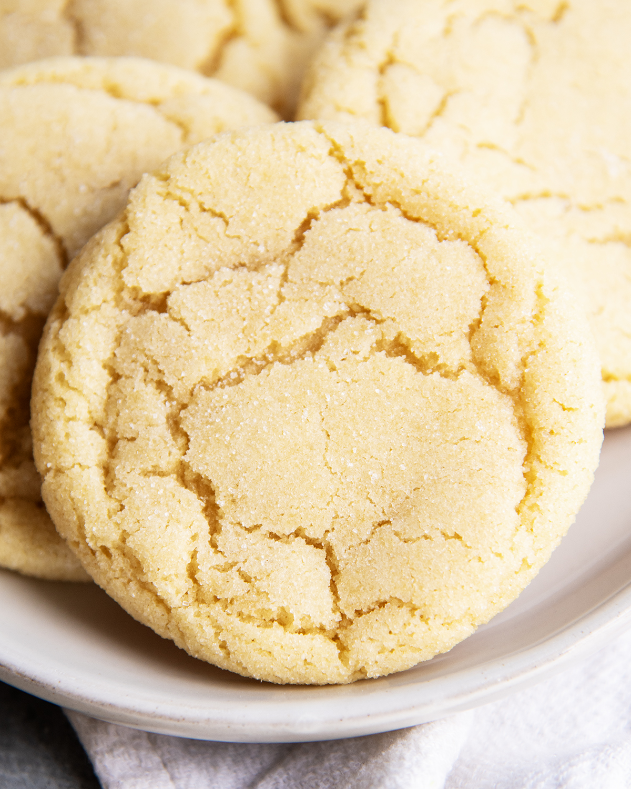

>
Sugar Cookies

Ingredients
- 2 ¾ cups all-purpose flour
- 1 tsp baking soda
- ½ tsp baking powder
- 1 cup (2 sticks) unsalted butter, softened
- 1 ½ cups sugar
- 1 egg
- 1 tsp vanilla extract
- ½ tsp salt
Instructions
- Preheat oven:Set your oven to 375°F (190°C).
- Mix dry ingredients:In a bowl, whisk together flour, baking soda, baking powder, and salt.
- Cream butter & sugar:In a separate large bowl, beat the butter and sugar until light and fluffy.
- Add wet ingredients:Mix in the egg and vanilla until smooth.
- Combine:Gradually add the dry ingredients to the wet mixture and stir until a dough forms.
- Shape cookies:Roll dough into small balls (about 1 tablespoon each). Place on an ungreased baking sheet and flatten slightly with the bottom of a glass (you can dip it in sugar for a sparkly top).
- Bake:Bake for 8–10 minutes, or until edges are lightly golden.
- Cool:Let cookies sit on the baking sheet for 2 minutes, then transfer to a wire rack to cool completely.